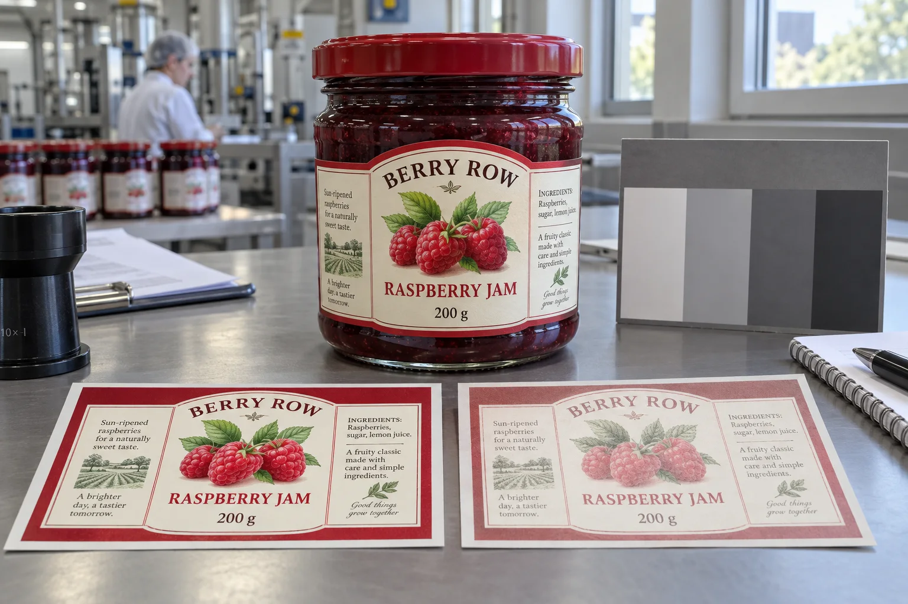

Ask where the package will spend its life
My first question would not be 'matte or gloss?' It would be whether the product sits in a shipping carton, an indoor aisle or a bright window display. Those routes create different buying decisions even when the artwork is identical.
The label has two jobs that buyers sometimes combine into one approval: look right when it arrives, and remain acceptable during its intended use. A signed color proof addresses the first. The second needs a separate discussion about exposure and acceptable change.
A bright display and a fast-moving shelf are different jobs
Imagine a composite jam brand with a deep raspberry-red label. A retailer places a display near a sunny window. Weeks later the founder compares it with stock kept in cartons and assumes the printer changed the color recipe. Without retained samples and exposure history, neither side has enough evidence.
Now consider a second brand whose jars move quickly through enclosed storage and an indoor aisle. It may reasonably choose a standard construction after a suitable trial rather than pay for a demanding outdoor specification it does not need.
I would not sell both brands the same expensive 'premium protection' package. The first needs evidence matched to the display route. The second needs a proportionate specification and a clear limit on what was tested.
Fading is not the same as scuffing
| Visible change | Question to investigate | Useful comparison |
|---|---|---|
| Color weakens with exposure | Ink and substrate response to light | Exposed sample against protected control |
| Ink disappears at contact points | Rubbing or chemical contact | Handled and unhandled samples |
| New delivery differs immediately | Print variation or changed construction | Approved standard and retained production sample |
| Paper tone changes | Substrate aging and environment | Printed and unprinted material areas |
A photograph with automatic color correction is a poor referee. Bring the physical samples together under consistent viewing conditions before deciding which mechanism is most likely.
Why the ink name is not enough
Pantone explains in its discussion of printing color variation that pigments differ in lightfastness and paper can change with exposure, including changes to optical brighteners. Its explanation concerns its guides, not a lifetime warranty for your packaging, but the distinction between ink change and substrate change is useful.
Likewise, UV-cured is a process description. Sun Chemical lists UV and UV-LED curing ink systems separately among its label-printing technologies. I would not treat the word UV on a quotation as proof of resistance to sunlight. Ask for the exposure performance of the selected ink, material and finish together.
For a critical brand color, request evidence about that actual color formulation. A result for one ink or a different substrate should not quietly become the promise for the whole design.
A practical screening plan
- Define the intended display route and how long the packaging needs to remain acceptable.
- Keep matched production samples from the same run, including an unexposed control stored away from light.
- Expose comparison samples under recorded conditions relevant to the real route.
- Compare them at agreed intervals under consistent viewing conditions.
- Evaluate brand appearance and the readability of important information separately.
- Use a qualified lab and agreed method when a contractual durability claim needs stronger evidence.
A window trial can reveal that one candidate changes sooner than another in that window. It cannot establish that an arbitrary number of days equals years outdoors. Orientation, season, glazing, heat and the test setup affect the comparison. Record those limitations alongside the result.
Where color measurement is required, agree the method and tolerance with the print or testing specialist before comparing numbers. Choosing an unexplained difference threshold after a shipment arrives creates a dispute rather than an acceptance standard.
Our buying view
Do not buy a clear film on a vague promise
The shortcut I would avoid is recommending lamination simply because it sounds protective. It may be the right answer for handling, but that is not the same question as light exposure.
A better pigment system, a suitable protective construction or a change in display position may each be worth comparing. Sometimes the cheapest effective fix is to keep reserve stock boxed and rotate the display; sometimes the route cannot change and the label must.
Send the printer a durability brief, not just a color code
Include the product, market, display location, intended period, critical colors, handling conditions and the acceptance evidence you need. Ask which claims the converter can support and which need outside testing. The fictional fading comparison in this article illustrates the issue; it is not a measured product test.
For abrasion, use our label rub-testing guide. For finish selection, see label lamination for food and beverages. For the initial color target, read content proof and contract color proof. Agree appearance at delivery and appearance after use as two related but distinct decisions.
Frequently asked questions
Does UV-cured ink mean a label will not fade?
No. UV curing describes how the ink is cured during production. Resistance to light exposure is a separate performance question requiring evidence for the printed construction and intended conditions.
Will lamination stop all fading?
No. A laminate may provide handling protection, but light protection depends on the particular film and complete printed construction. Ask for relevant performance evidence rather than assuming all clear films block damaging exposure.
Can I test labels in a window?
A controlled window comparison can help screen options when you keep a dark control and record conditions. It does not establish a universal outdoor lifetime or replace a suitable standardized test when one is required.
Related buyer guides
Review your label specification
Send package photos, label dimensions, material details, quantity and application conditions. Include good and failed samples where possible so the discussion starts with evidence.